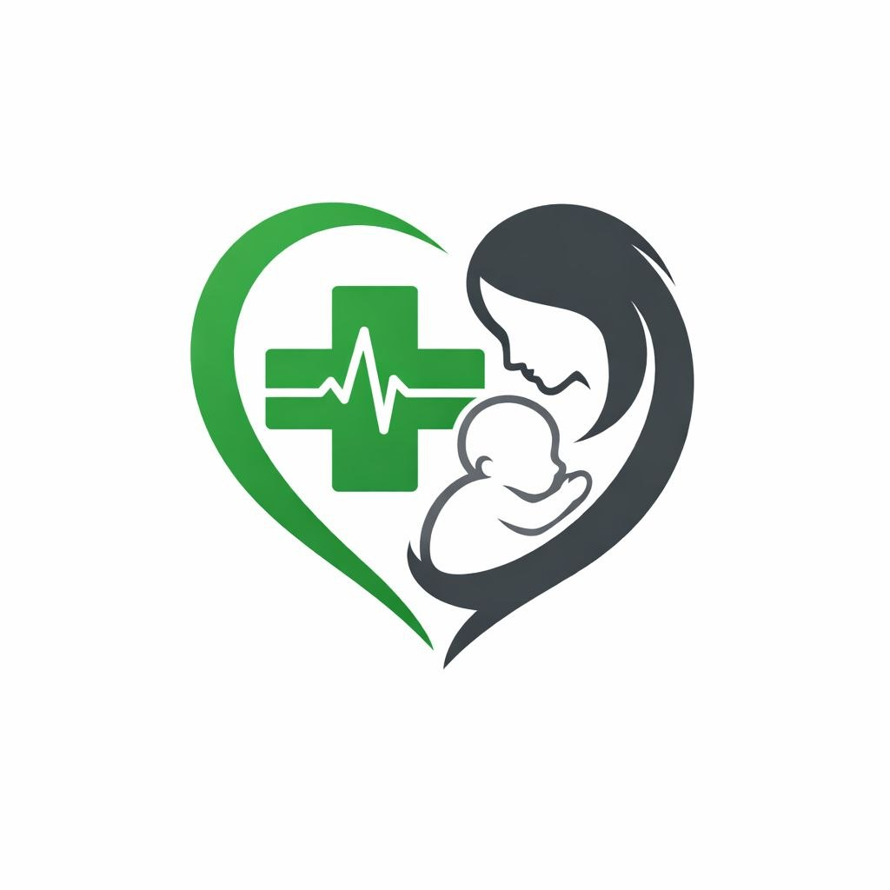

Suivi de grossesse
Prendre rendez-vous auprès d’un professionnel de santé aide à suivre la grossesse et à poser ses questions tout au long du parcours.
La grossesse et les premiers mois de vie sont des périodes importantes pour la santé. Un suivi régulier par une équipe qualifiée permet de recevoir des conseils adaptés à chaque étape.
Contacter CongoVital
Prendre rendez-vous auprès d’un professionnel de santé aide à suivre la grossesse et à poser ses questions tout au long du parcours.
Une équipe de santé peut vous informer sur la préparation à l’accouchement et les ressources disponibles près de chez vous.
Le suivi après l’accouchement accompagne la santé de la mère et du nouveau-né. Consultez rapidement un professionnel en cas d’inquiétude.
Pour toute question concernant votre santé ou celle de votre bébé, adressez-vous à un professionnel de santé ou contactez notre équipe.
Nous contacter